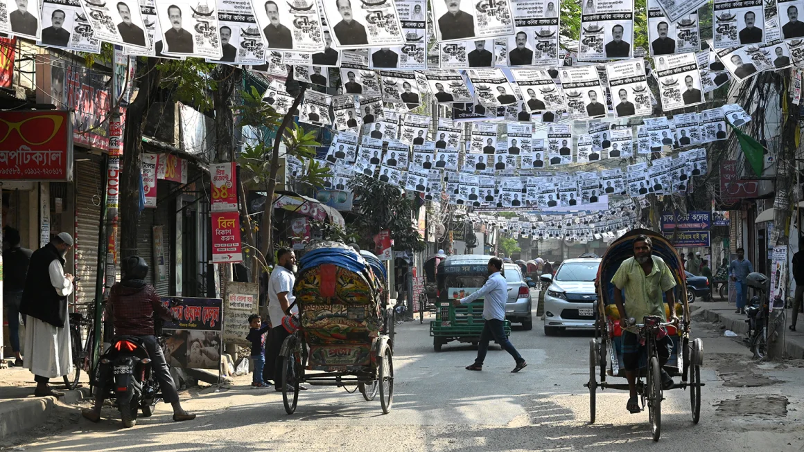

More than a billion people will head to the polls across South Asia in 2024
An election boycotted by the main opposition as the world’s longest serving female prime minister looks set to extend her rule.
A cricket legend and former prime minister languishing in prison versus a one-time fugitive looking to make a comeback as a powerful military keeps watch.
A populist leader hoping to enter his second decade in power as he pushes a popular but religiously divisive brand of politics.
And an island nation recovering from its worst economic crisis in decades after protesters stormed the presidential palace.
Four South Asian countries are expected to head to the polls next year, in a grand test for democracy that will see nearly 2 billion people across Bangladesh, Pakistan, India and Sri Lanka cast their ballots from January through September.
All former colonies who gained independence from Britain within the last century, each are at a different stage of growth and facing a variety of crises and opportunities.
Here’s what you need to know about democracy’s greatest show.
Bangladesh
Bangladesh, a country of some 170 million people, is the first to cast votes on January 7.
The once multiparty democracy is being threatened as its ruling Awami League party continues what rights groups say is a campaign to silence dissent, pushing the republic toward something more closely resembling a one-party state.
Sheikh Hasina, current Prime Minister and chair of the Awami Party, is likely to be reelected as the country’s leader for a fourth consecutive term.
Hasina has been in power since 2009 and won the last election in December 2019, in a poll marred in deadly violence and accusations of poll rigging.
Missing then was her primary opponent Khaleda Zia, a former prime minister and chief of the main opposition, the Bangladesh Nationalist Party (BNP), who was jailed the year before on corruption charges.
For much of the past three decades, politics in Bangladesh has been defined by a bitter rivalry between the two women, who both saw their politician father and husband respectively assassinated in office. Political turmoil has followed into the second generation.
Zia, 78, now lives under house arrest and her BNP continues to face mounting challenges by Hasina and her ruling dispensation with the mass arrest of its politicians.
The situation has led to protests, and the BNP has decided to boycott the election again, paving the way for Hasina once more.
“The government is claiming to commit to free and fair elections with diplomatic partners while the state authorities are simultaneously filling prisons with the ruling Awami League’s political opponents,” said Julia Bleckner, senior Asia researcher at Human Rights Watch, in a November statement.
“A free election is impossible when the government stifles free expression and systematically incapacitates the opposition, critics, and activists through arbitrary arrests, enforced disappearance, harassment, and intimidation,” Bleckner added.
Pakistan
Ruled for much of its 76 years by political dynasties or military establishments, no democratically elected leader has ever completed a full five-year term since Pakistan won independence.
In recent years the country of 230 million has seen the all-too-familiar mix of political instability and militant attacks percolate alongside a particularly acute economic crisis that has been brutal on both middle and lower income families.
Imran Khan, the country’s former prime minister and arguably the most popular figurehead, is languishing behind bars, charged with fraud and facing charges for revealing state secrets – leaving him unable to contest in the upcoming polls in February.
Khan, who was ousted from power in a parliamentary no-confidence vote last year, says the charges against him are politically motivated and framed to stop him from standing in the election, an allegation authorities deny.
TV stations are banned from running Khan’s speeches, and many of his Pakistan Tehreek-e-Insaf (PTI) party colleagues have been arrested.
The country, meanwhile, faces mounting challenges – from economic uncertainty and frequent militant attacks to climate catastrophes that are putting millions at risk – setting the stage for a difficult road to recovery for its new leadership.
India
Often called the world’s largest experiment in democracy, India is expected to head to the polls in the spring, in a mammoth election that is likely to see Prime Minister Narendra Modi secure a rare third term in power.
The populist leader of the Hindu nationalist Bharatiya Janata Party (BJP), has tightened his grip on India’s democratic institutions in way not seen since 1970s, when Indira Gandhi ruled the country with an iron fist, pushing it toward autocracy.
Modi, whose calendar this year included diplomatic trips to Australia and the United States, is presenting himself as a statesman who is cementing the country as a modern superpower. And 2023 has been a remarkable year for India’s 1.4 billion people.
This year was the moment it overtook China to become the world’s most-populous nation, while the year before it surpassed its former colonial ruler Britain to become the world’s fifth-largest economy.
In August, India made history by soft landing a rover on the moon, becoming just the fourth nation in the world to have completed such a feat – and it launched its first spacecraft dedicated to studying the sun weeks after.
The country hosted the Group of 20 (G20) in September, presenting New Delhi with an opportunity to extend its leadership beyond the country’s borders at a time of increasing political turmoil.
As the election draws close, analysts say Indian politics remains unpredictable, and much can change as the parties gear up to campaign in the months ahead.
Sri Lanka
Nearly two years ago, Sri Lanka’s then-President Gotabaya Rajapaksa was forced to flee his country after angry protesters stormed his residence in anger, blaming him for the country’s worst economic crisis in 73 years.
It was a remarkable moment for a protest movement that thrust the bankrupt nation of 22 million into the global spotlight after inflation soared and foreign reserves dwindled, leaving millions unable to afford food, fuel and medicines.
Rajapaksa resigned from his post, paving the way for current President Ranil Wickremesinghe to take over.
In elections expected before September, Wickremesinghe is likely to stand for a second term, months after he helped secure a much-needed loan from the International Monetary Fund and made sweeping reforms to the budget to ensure financial growth.
Sri Lanka hasn’t had a general election since 2018, and Wickremesinghe has repeatedly delayed the polls due to the economic crisis.
As the economy – and the country’s people – recover, a date for the election is yet to be announced and it remains to be seen whether 2024 will be the year the country’s people decide on its future leader.